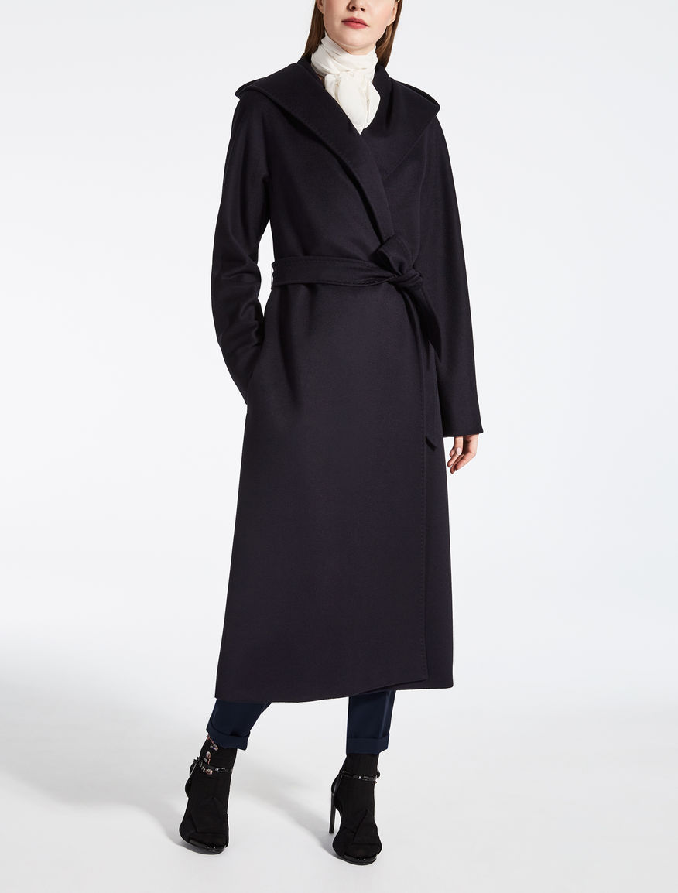
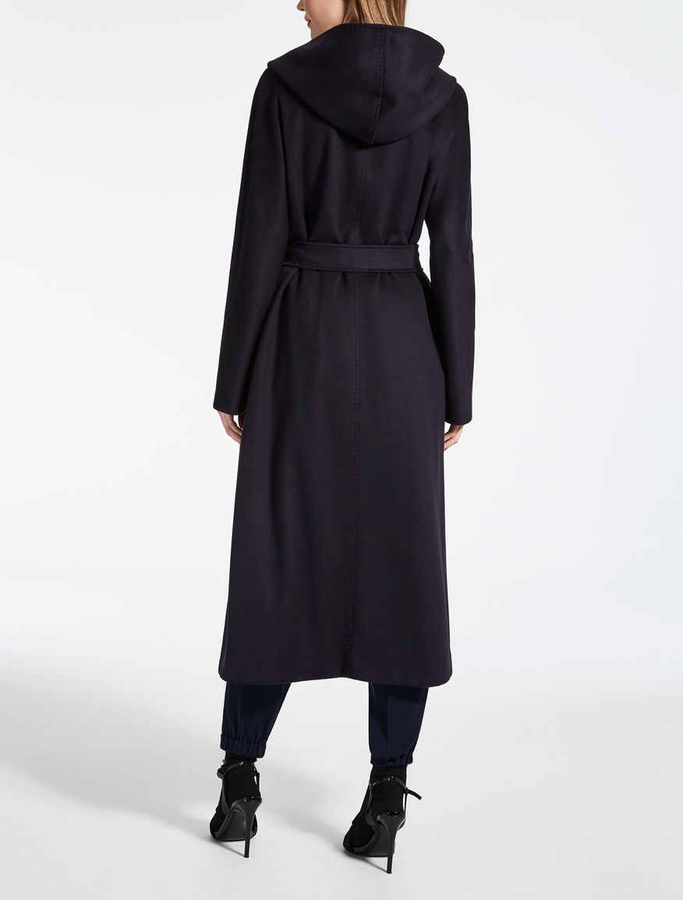

Кашемировое пальто «Arnica»
 Описание товара
Длинные пальто из чистой кашемировой ткани с воротником и капюшоном из платка.
Характеристики товара
- Brand: MaxMara; Производство: Италия.
- Цвет: Темно-синий.
- Ткань: 100% кашемир; Подкладка: 100% вискоза.
- Не стирать. Не отбеливать. Не сушить в стиральной машине. Гладить при холодной температуре. Очень тонкая химическая чистка, любой растворитель, кроме трихлорэтилена.
Подробное описание товара
Рукава кимоно и карманы по бокам. Подкладка из жаккардовой ткани. Закрытие с подходящим ремнем.